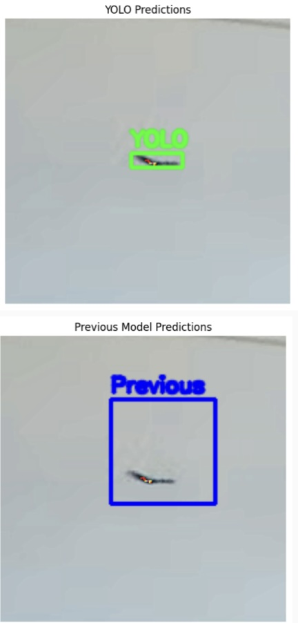

Project Overview:
In partnership with Argonne National Laboratory, I was on a team which conducted research on how to improve detection of birds and bird collisions. I performed a comparison analysis of previous work on bird detection with recently released open source models. Models were evaluated by both their ability to detect a bird as well as how tightly a bounding box was fit around the bird in the image if present.
Modeling Approach:
Comparison Models included Yolo-V8, Yolo-V11, and an R-CNN.
